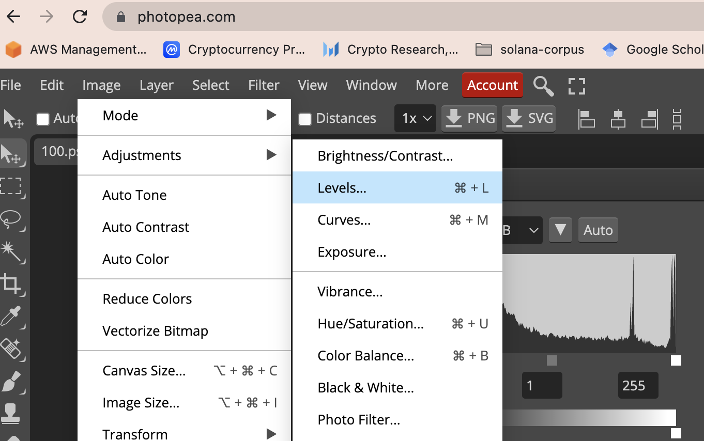

Introduction
For grayscale images (https://picsum.photos/id/111/150/100?grayscale), pixel values are integers that range from 0 (black) to 255 (white).
Here is an example of python code that displays the pixel values of a grayscale image.
from PIL import Image
import requests
url = "https://picsum.photos/id/111/150/100?grayscale"
img = Image.open(requests.get(url, stream=True).raw)
[w, h] = img.size
for i in range(0, w):
for j in range(0, h):
point = (i, j)
px = img.getpixel(point)
print(point, px)